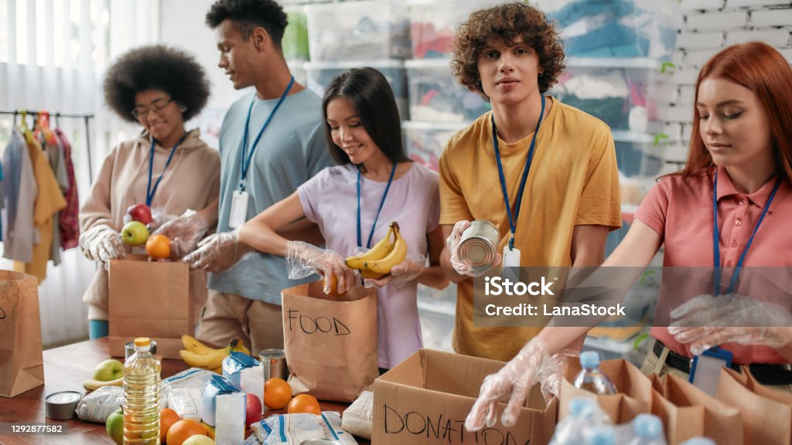

Association humanitaire Le soucis des nôtres
Bienvenue sur le site de notre association humanitaire, engagée depuis des années au cœur de l’action solidaire. À Paris et au-delà, notre équipe expérimentée œuvre chaque jour pour apporter soutien, dignité et espoir à ceux qui en ont besoin. Rejoignez-nous dans cette aventure humaine pleine de sens.
